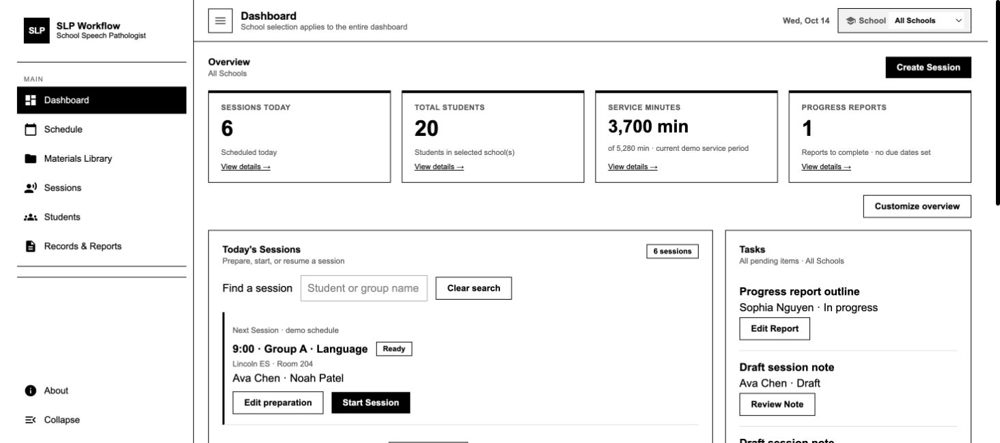

Scheduling requires coordination
The interviewed clinicians build their own schedules and coordinate class, lunch and recess times with teachers. One described spending days scheduling around 55 students at the start of a school year.
Client-informed project / In progress / 2026
Connect preparation, session documentation and reporting so school-based speech-language pathologists can give more attention to students.
The clickable wireframe is available now. The full platform is still being refined around client needs.

INTERACTIVE WIREFRAME / SLP WORKFLOWThe project began with The Special Standard’s school SLP platform brief. Early team work covered client interviews, market context, personas, journey mapping and feature priorities. Building on that foundation, I continued to develop the SLP-side product structure and examine its workflows through an interactive wireframe.
The focus is school-based speech-language therapy, particularly K–8. Districts are the purchasing and administrative stakeholders; this prototype focuses on the clinician’s work: students, scheduling, materials, sessions and documentation.
This is a product-design case study and interaction demo with fictional student and therapy data. AI, external platform sync and a production clinical system are not connected. No formal usability results are claimed.
The client meeting describes a connected workload: a large caseload leaves limited preparation time; group therapy makes recording difficult; incomplete notes then need to be reconstructed for reports. This shifted the design focus toward reducing repeated entry and context switching.
The interviewed clinicians build their own schedules and coordinate class, lunch and recess times with teachers. One described spending days scheduling around 55 students at the start of a school year.
Clients described groups of roughly three students whose goals and behavior differ. One group-level accuracy score would lose individual performance and cueing context.
Clients wanted reusable, themed materials without a script dictating every instruction. Content should support the clinician’s adaptations.
Clients reported that an evaluation or re-evaluation report can take about three hours; this is distinct from a routine session note. The design needs to retain source records for later synthesis and review.
Source: client meeting transcript and primary-user research synthesis. Figures describe the interview context, not industry-wide statistics.
Dashboard focuses on today’s work and tasks; Schedule owns the calendar; Materials Library manages reusable content; Sessions supports delivery and capture; Students holds individual context; Records & Reports handles documentation. The full weekly calendar belongs in Schedule, avoiding a duplicate dashboard workspace.
My Materials comes before Browse Materials. Saved, uploaded, authored and AI-drafted content belongs in the personal collection. External resources retain their link and source for clinician review before reuse.
One story can support articulation, retelling and conversation. Sessions retain each student’s target, trials, cueing and observations rather than treating participation in the same activity as the same outcome.
Service minutes describe delivered time, not clinical goal achievement. Reports begin as editable drafts assembled from finalized records, retaining clinician interpretation and confirmation.
Synthesize team research, client experiences and mentor feedback around scheduling, content and documentation. Focus the current phase on the clinician interface, with district administration and billing outside this prototype’s scope.
Map the work before, during and after a session into six primary destinations. Schedule answers when; Materials Library answers what to use; Sessions supports delivery and capture.
Retain the grid structure of the earlier HTML while iterating school filters, customizable overview cards, calendar views and staged Add Event forms. Move pending documents into Records & Reports.
Add fictional students, goals, availability and record examples so search, editing, saving, draft review and export can be demonstrated. Session interaction effort remains a focus for the next iteration.
Example: three students share the “New Friends” material while practicing /r/ production, story retelling and relevant questions. The clinician confirms individual targets, captures performance by target and then reviews each student’s attendance, delivered minutes and notes.
These screens are captured from the current clickable version. The wireframe focuses on information, actions and workflow before visual design. Select an image to enlarge it or open View Prototype for the demo.
School filters, customizable overview cards, sessions and tasks.
Start with My Materials, preview or adapt an item and add it to a session.
Individual targets within a shared group; preparation, delivery and review remain under refinement.
Open pending drafts and prepare progress reports by student and date.
The deliverable is a demonstrable SLP workflow wireframe that makes page responsibilities, material reuse, individual target capture and report review concrete. It turns “efficiency” into tasks that can be examined; time savings and therapy outcomes still need validation with practitioners.
Walk through group sessions with SLPs and observe whether capture interrupts therapy. Test how saved availability supports scheduling and how external materials work alongside session records. Then define the visual system, production data model and AI or resource integrations.
Project sources include the client transcript, research synthesis, mentor guidance, team presentation, market research, personas and earlier wireframes. Team research contributors: Michael Chalmers, Mengmeng Xue, Ruobin (Michelle) Wu and Rui Yang. This page focuses on the subsequent SLP-side design iteration; research plans, market estimates and persona assumptions are not presented as validated outcomes.